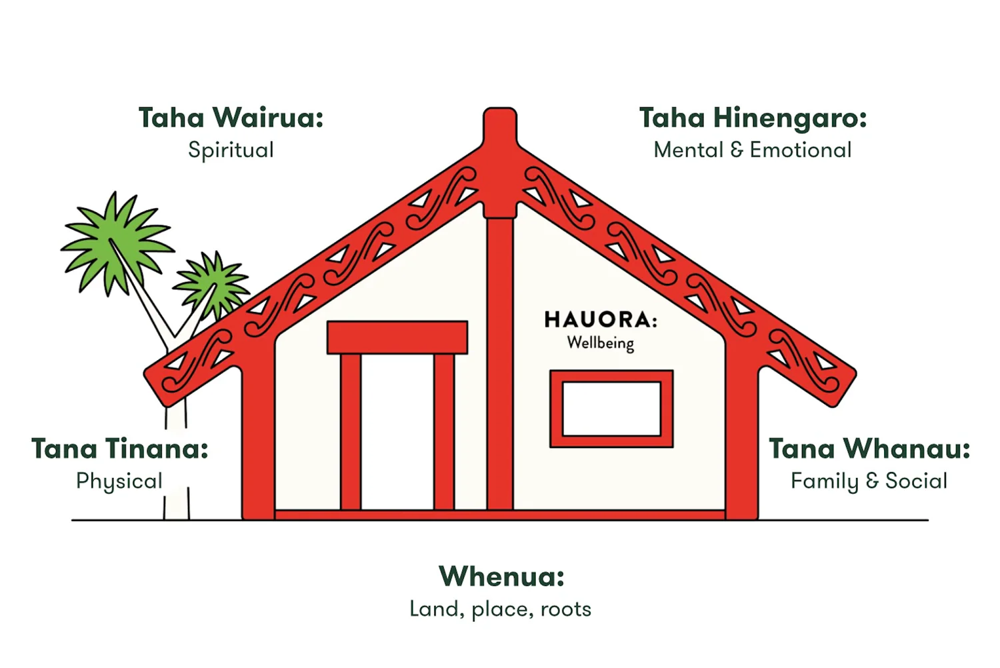

Te Whare Tapa Whā
Te Whare Tapa Whā is a model for wellbeing, created in 1984 by Sir Mason Durie, a leading Māori health advocate. It uses the imagery of a Wharenui (Māori communal meeting house), with each of the four walls representing a different aspect of wellbeing, all being supported by the land as its foundation.

My Te Whare Tapa Whā wellbeing plan is as follows-
| Wall | Activities |
|---|---|
| Taha Tinana (Physical Wellbeing) | Go for a walk in the woods at least once per week |
| Taha Whānau (Family Wellbeing) | Message my family and friends back in England every week |
| Taha Hinengaro (Emotional and Mental Wellbeing) | Use progressive muscle relaxation and breathing exercises before bed every night |
| Taha Wairua (Spiritual Wellbeing) | Spend time each day thinking about my Cornish heritage and my connections to others. |
| Whenua (Interconnections to the land and environment) | When I am taking breaks from coding, look out at the Kōwhai tree in my garden and listen to the Tuis |